Jazz Zone
Identidad Visual
Jazz Zone es un emblemático bar del mítico pasaje "El Suche", en el corazón del distrito de Miraflores, en la ciudad de Lima.
Durante más de 30 años ha sido un punto de encuentro de músicos peruanos, donde inevitablemente se dió un cruce natural, entre el jazz y géneros afro propios del Perú como el festejo, landó, marineras, etc.,. Esta simbiosis entre el jazz y la música afroperuana es el punto de partida para la construcción de la identidad visual del bar.
El objetivo es comunicar la audacia y carácter de un bar/club de jazz con 30 años de historia, que sigue vigente y sobre todo que tiene identidad propia.
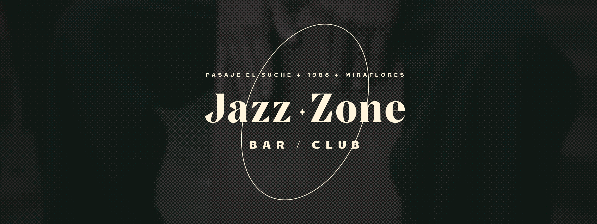
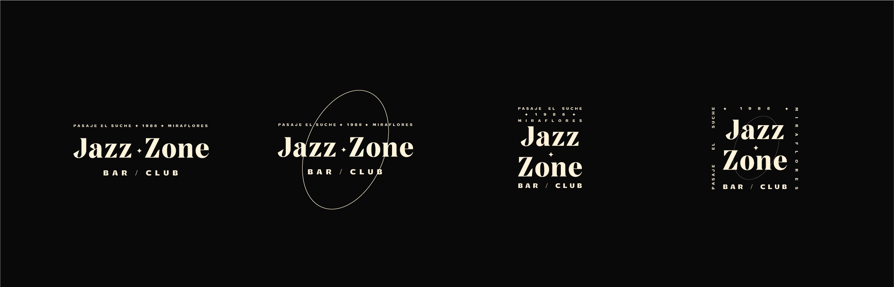
Para construir el logotipo y el sistema gráfico partimos por la elección de una tipografía serif con carácter y contundencia, "TotalBlack". El elemento gráfio que le acompaña es un óvalo, simbolismo gráfico que remite a estos 3 concetos: El agujero de un cajón peruano, instrumento de percusión fundamental en la música afroperuana. La forma de las notaciones músicales, más relacionadas a la teoría musical occidental, por ende al jazz. Y por último, el óvalo también hace referencia a la forma de una luz de escenario, muy presente en la experiencia de música en vivo y refuerza el conceto de "zona".
El sistema gráfico busca contener todo tipo de aplicaciones, siendo la "zona" del jazz un elemento constante en todas las piezas. Por último se refuerza el nexo con la música afroperuana para además hacer relación con la gastronomía criolla del Perú completando así, una experiencia redonda para el cliente.
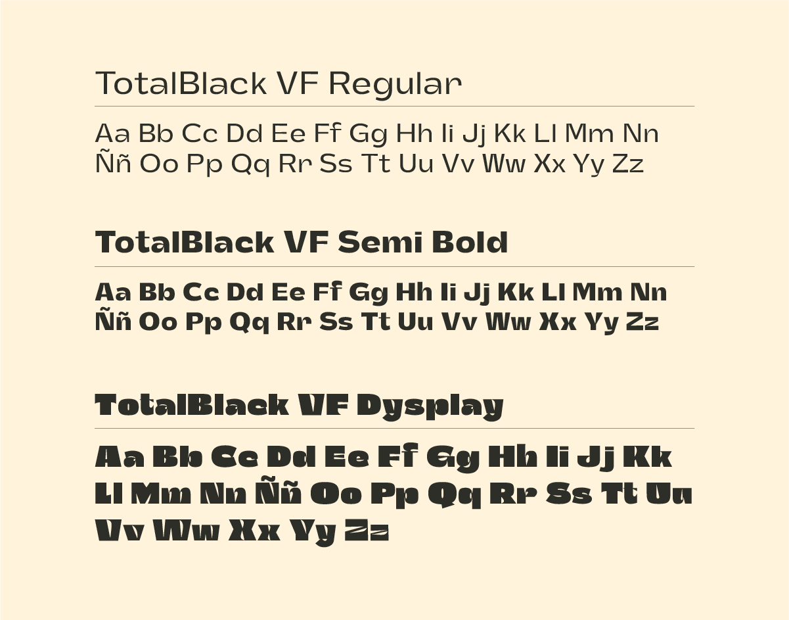
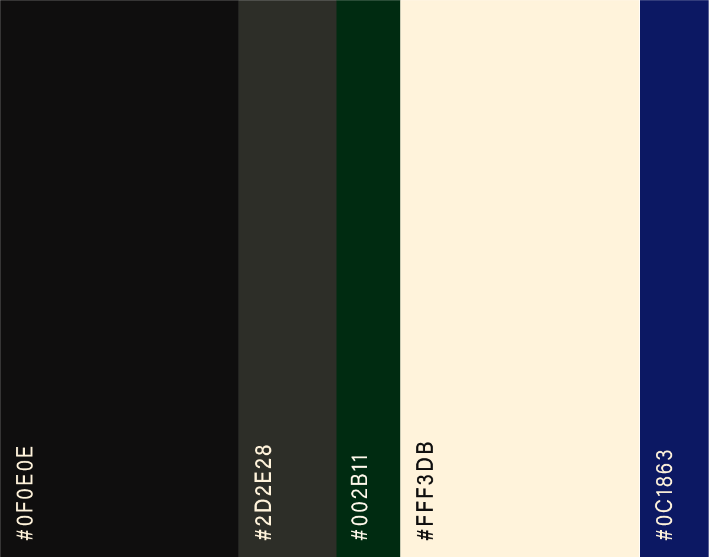
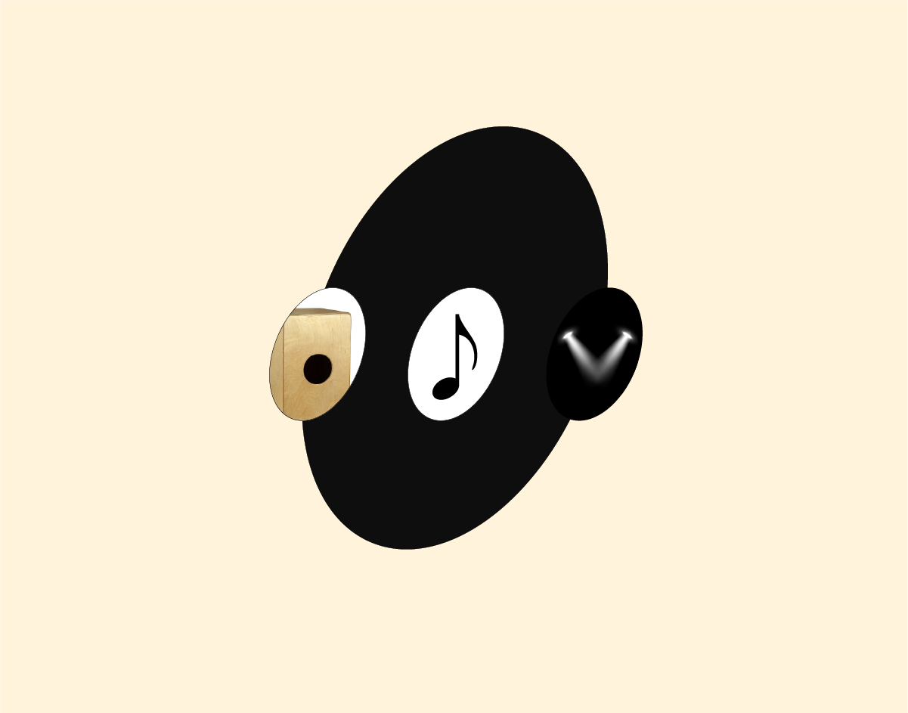
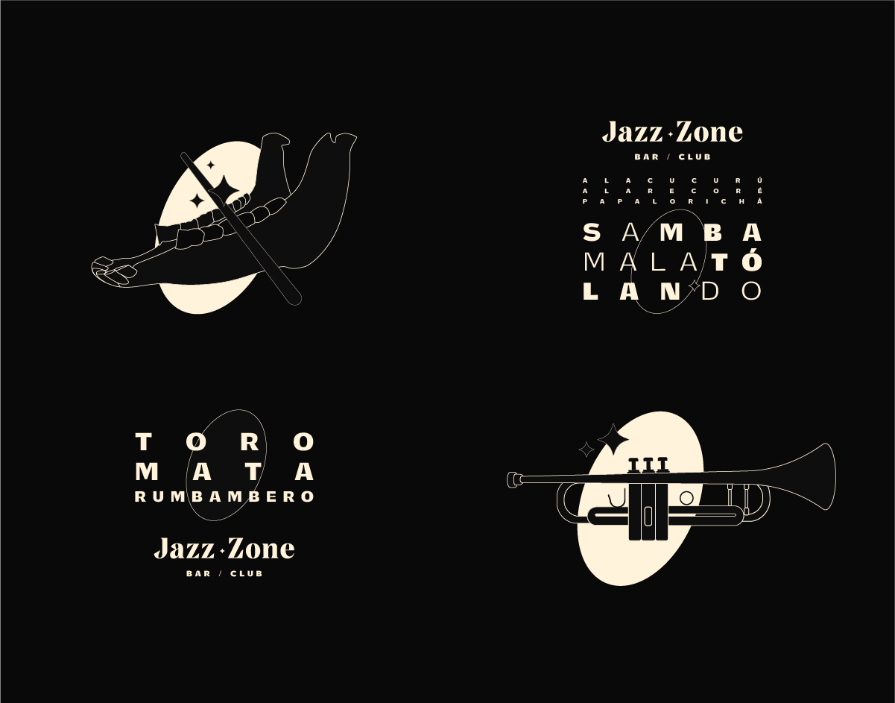
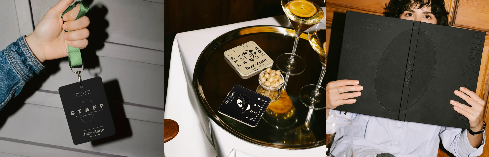
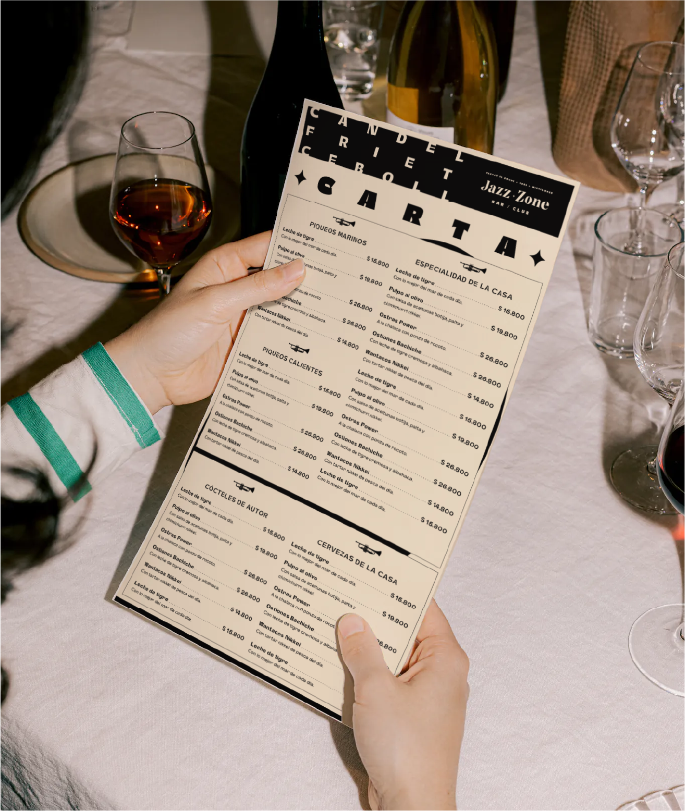
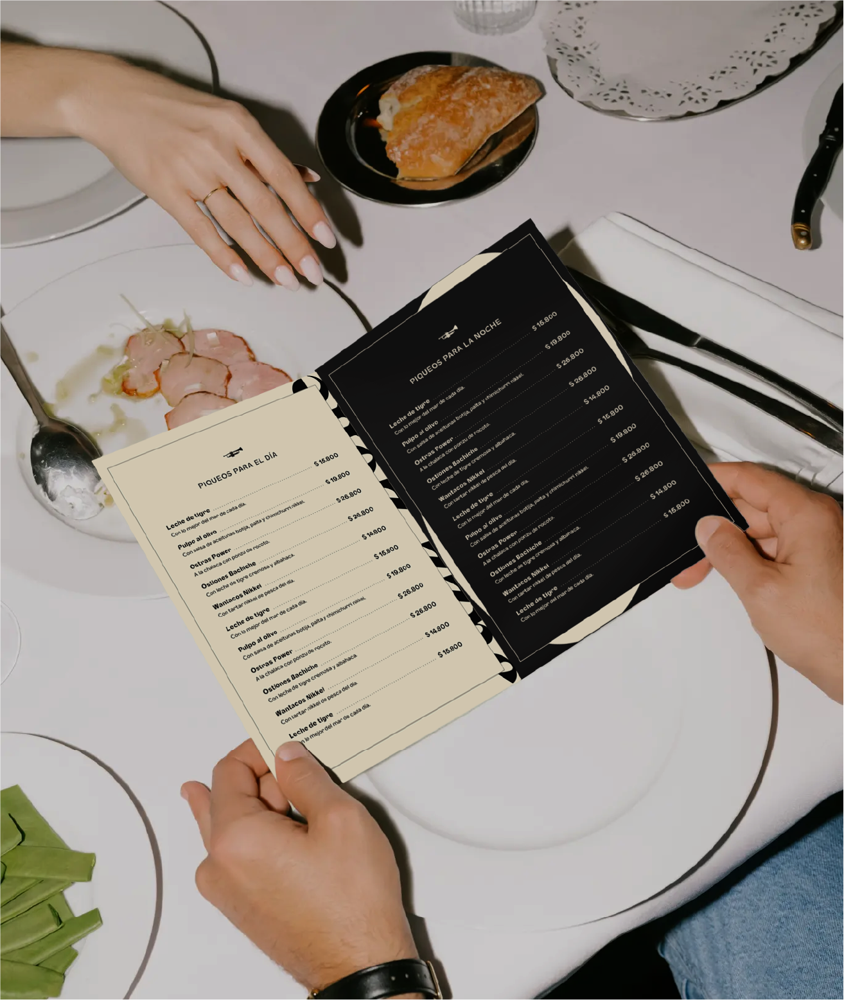
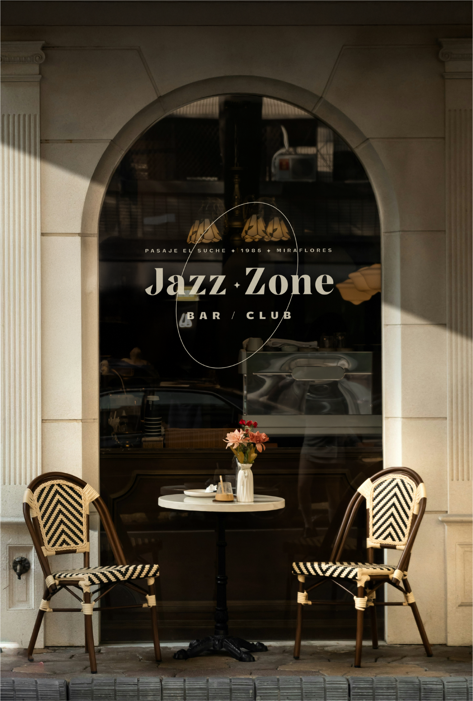
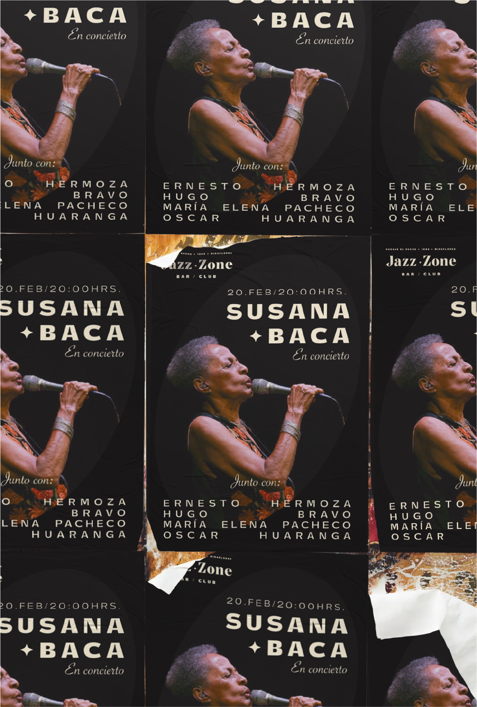